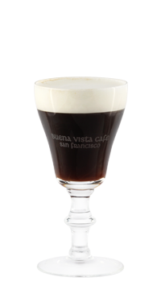

Ирландский кофе — Согрейся!
На дворе стояла суровая зима 1943 года. Самолет, взявший курс из аэропорта Фойонс в теплый Лос-Анджелес, совершил вынужденную посадку из-за непогоды…
Легенда коктейля
На дворе стояла суровая зима 1943 года. Самолет, взявший курс из аэропорта Фойонс в теплый Лос-Анджелес, совершил вынужденную посадку из-за непогоды.
Продрогшие и озлобленные пассажиры оккупировали стены местного бара, судорожно заказывая горячий кофе. Молодой Джо Шеридан знал: ни один кофе не согреет так, как виски, и, желая помочь людям, долил в каждую порцию немного «целебного» напитка. Когда один из отогревшихся и довольных пассажиров спросил, что это за кофе, Джо с гордостью ответил: «Ирландский, сэр!».